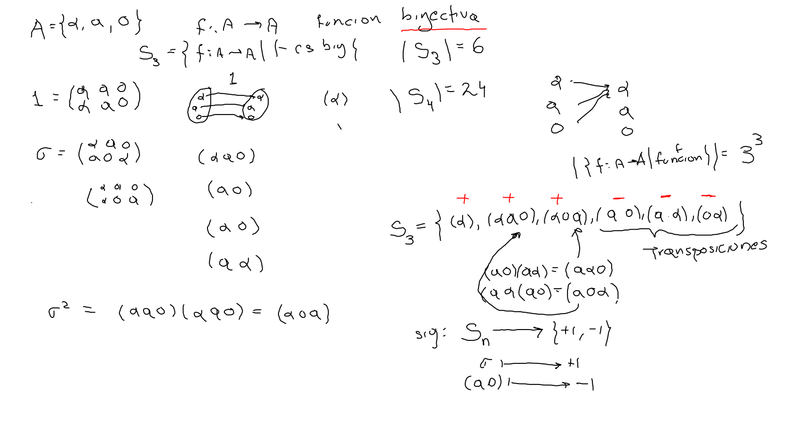
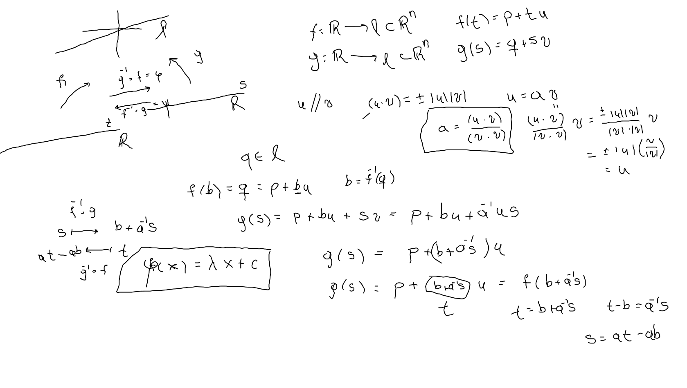
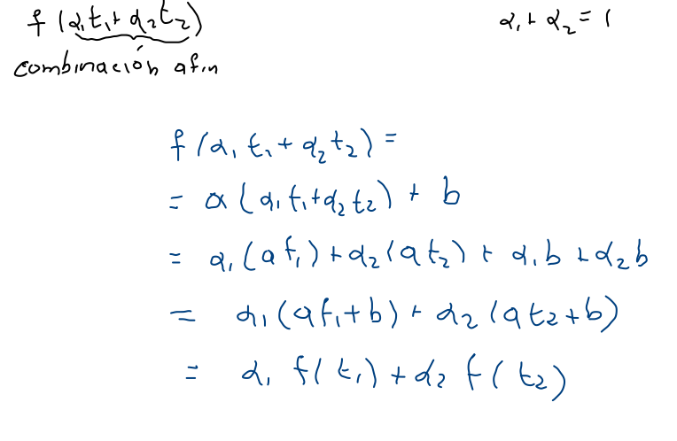
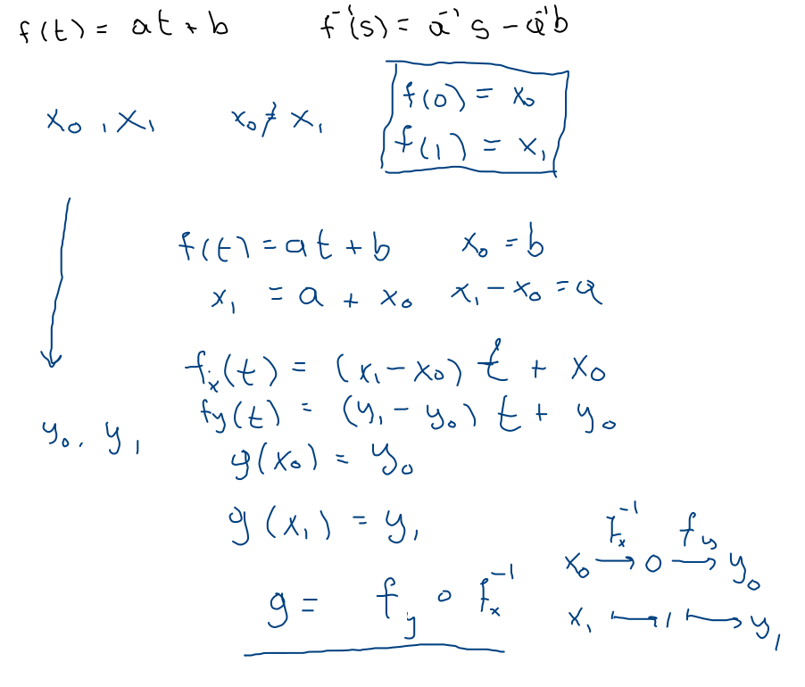

Erlanger programm (F. Klein –botella, video–)
Funciones
f:A→A
- Biyectivas
- Inversas izquierda y derecha
- Grupo simétrico (A finito)
- Sn grupo de permutaciones de n elementos de orden n! 
- Grupo bajo composición y (sub)grupos de transformaciones.
- Afines
- Reparametrizaciones de una recta en Rn. 
- Funciones afines (transformaciones a=0), grupo A(1), f(t)=at+b. Gráfica Γ(f)⊂R2 línea no-vertical.
- Preservan combinaciones afines. 
- 2 en 2. Dos parejas de puntos distintos definen una única f∈A(1) 